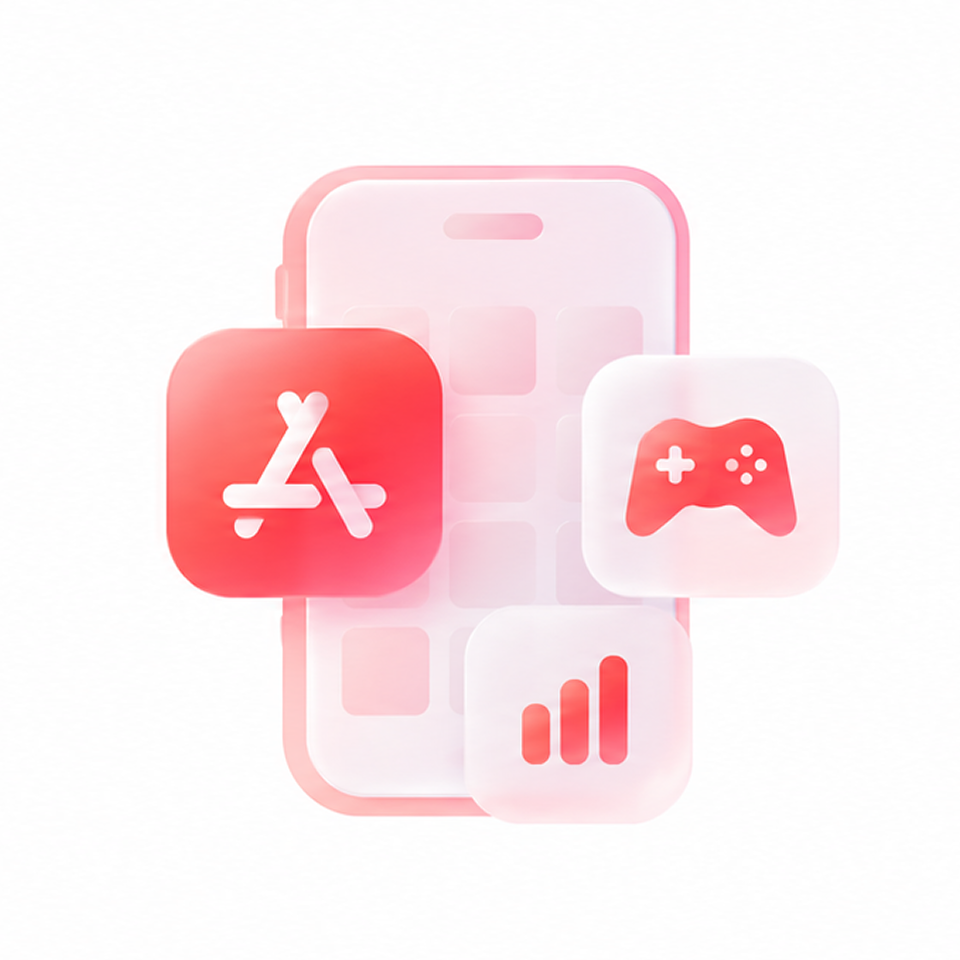
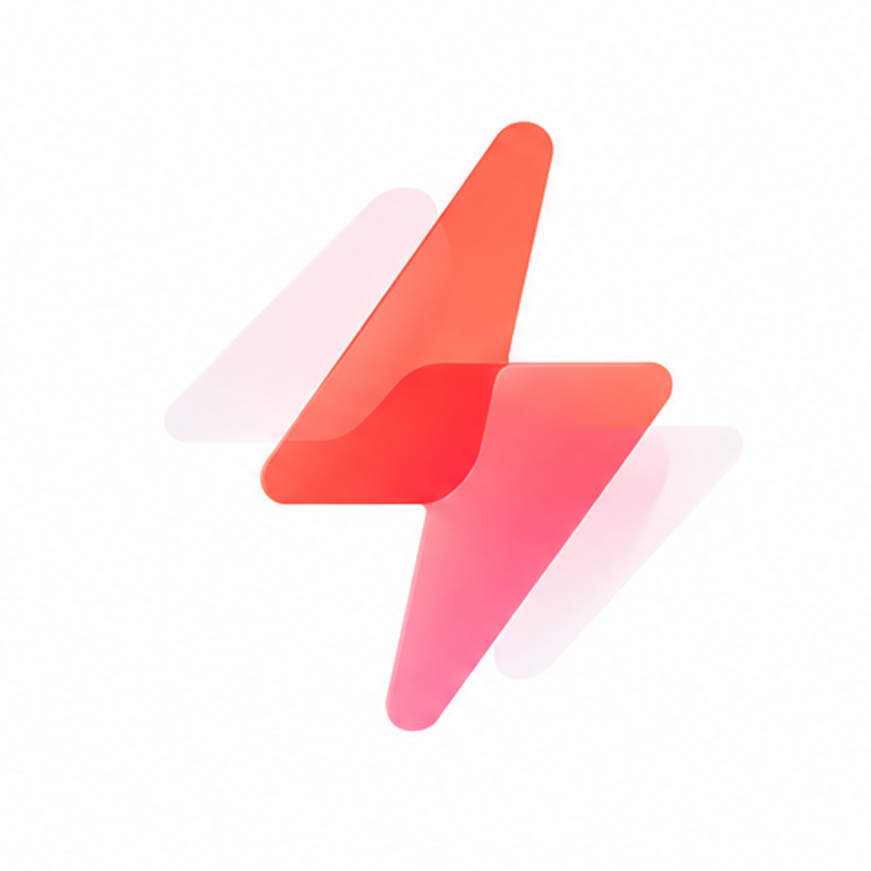

Vertical Portals and Media
Contextual ads for showcasing products and brands embedded in natural contents for audience interested in specific vertical topics
Ignite Vision AI engine transforms how brands discover, engage, and measure influencer and channel partnerships across the Asia-Pacific region and beyond.
Our proprietary AI analyses content semantics, audience demographics, engagement patterns, and brand affinity signals to identify channels and influencers who will genuinely resonate with your target market. Unlike keyword-based tools, Ignite Vision understands brand values and maps them to creator profiles and channel properties with nuance and context.
ChineseAN is a platform which facilitates brands to connect with channel partners, businesses and corporate partners, such as apps, vertical portals, loyalty programs, media, etc.
Contextual ads for showcasing products and brands embedded in natural contents for audience interested in specific vertical topics

Display ads and incentive-based ads in mobile apps and games, targeted to specific user segments, interests and intents.
ChineseAN collaborates with a big number of international loyalty programs to offer members with numerous brand deals and rewards, featuring brands and their stores to millions of loyal consumers globally
Starry is an AI-driven KOL marketing platform which enables brands to most effectively partner with influencers globally to achieve the best performance
Search and filter across 2M+ profiles using AI-powered semantic matching, audience analytics, and performance benchmarks.

Real-time dashboards tracking reach, engagement, conversions, and ROI across every channel and influencer in your campaign.

Automate outreach, contract management, content approvals, and payment processing across your entire influencer program.
AI models forecast campaign outcomes before launch, enabling data-driven budget allocation and influencer selection.

Centralised messaging across WhatsApp, WeChat, LINE, and proprietary apps to manage all influencer relationships in one place.

Create data-backed, client-ready campaign proposals in minutes with automated influencer shortlisting and budget modelling. Create campaign reports in minutes.

ChineseAN is a platform which facilitates brands to connect with channel partners, businesses and corporate partners, such as apps, vertical portals, loyalty programs, media, etc.
Contextual ads for showcasing products and brands embedded in natural contents for audience interested in specific vertical topics
Display ads and incentive-based ads in mobile apps and games, targeted to specific user segments, interests and intents.
ChineseAN collaborates with a big number of international loyalty programs to offer members with numerous brand deals and rewards, featuring brands and their stores to millions of loyal consumers globally
Starry is an AI-driven KOL marketing platform which enables brands to most effectively partner with influencers globally to achieve the best performance
Search and filter across 2M+ profiles using AI-powered semantic matching, audience analytics, and performance benchmarks.
Real-time dashboards tracking reach, engagement, conversions, and ROI across every channel and influencer in your campaign.
Automate outreach, contract management, content approvals, and payment processing across your entire influencer program.
AI models forecast campaign outcomes before launch, enabling data-driven budget allocation and influencer selection.
Centralised messaging across WhatsApp, WeChat, LINE, and proprietary apps to manage all influencer relationships in one place.
Create data-backed, client-ready campaign proposals in minutes with automated influencer shortlisting and budget modelling. Create campaign reports in minutes.
Copy and paste your internal communication or agency brief about your brand values, target audience, campaign objectives, and budget parameters into the AI prompt window of Starry platform.
Our engine analyses your brief and returns a ranked shortlist of optimal influencers with predicted performance.
Activate your campaign with automated outreach, content coordination, and real-time performance monitoring.
Receive comprehensive ROI reporting and AI-driven recommendations to continuously improve campaign performance.